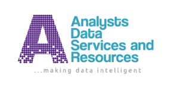

Loan Default Prediction

Loan-Default-Prediction-using-Machine-Learning
Data Analyst | Excel | SQL | Jupyter Notebook |Machine Learning | Power BI | Researcher @FavourJames
.
Loan-Default-Prediction-using-Machine-Learning

It provides insightful visualizations and analytics for sales data, enabling stakeholders to make informed decisions.

Sales Dashboard in Excel

Scraped twitter data using Snscrape in twitter and data cleaning of the extracted tweet.
I am a dedicated and detail-oriented data analyst with over three years of experience in collecting, organizing, visualizing, and analyzing raw data using tools like Excel, Python, and Power BI. My passion lies in translating complex data into actionable insights that drive strategic business decisions.
With a proven track record of enhancing decision-making processes through data-driven insights, I have successfully worked both in-person and as a freelancer. My expertise includes improving data collection processes, automating data analysis tasks, and creating interactive dashboards that facilitate quick and effective decision-making. I am committed to continuous learning and staying updated with the latest trends and techniques in data analysis.
Data Analyst, Jan 2023 - Present
Research Analyst, Oct 2022 - Present
ADSR is a Data and Research Company that provides accurate data, information and analysis for intelligent investment, academic and policy decisions.
Project Management Officer, July 2022 - Dec 2023
The data book (Nigeria in Figures) by the Chief Economist, Analysts’ Data Services and Resources (ADSR), Dr. Afolabi Olowookere will serve as a reference data book to guide the measurement and assessment of Nigeria’s socioeconomic performance over time and also aid Nigeria’s planning process and drive socioeconomic growth and development.
Data Analyst Intern, Aug 2021 - Aug 2022
ADSR is a Data and Research Company that provides accurate data, information and analysis for intelligent investment, academic and policy decisions.